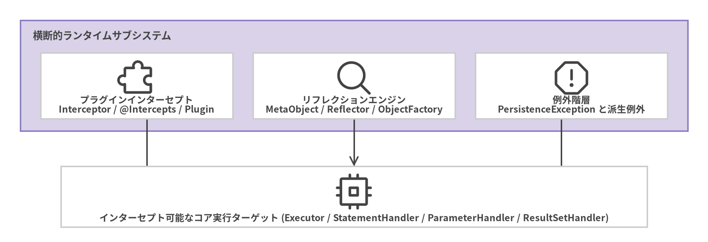

プラグイン・リフレクション・例外
動的プロキシによるインターセプト (org.apache.ibatis.plugin)、キャッシュ付き JavaBean / Record リフレクション (org.apache.ibatis.reflection)、およびランタイム例外階層 (org.apache.ibatis.exceptions) の API リファレンスです。

Source Code
from drawlib.canvas import save, setup
from drawlib.diagrams.architecture import ArchitectureDiagram, Node, NodeGroup, PhosphorIcon
from drawlib.styles import Colors, Styles
setup(width=140, height=48, dpi=150)
d = ArchitectureDiagram(
node_style=Styles.Dark,
node_text_style=Styles.DarkBold.patch(text_size=9.5),
edge_style=Styles.Dark.patch(line_width=1.5),
edge_text_style=Styles.DarkBold.patch(text_size=9.0),
node_card_style=Styles.Neutral.patch(shape_fill_color=Colors.White),
)
grp = d.add(
NodeGroup(
"横断的ランタイムサブシステム",
width=132,
height=22,
style=Styles.SecondaryNeutral,
text_style=Styles.DarkBold.patch(text_size=10.2, halign="left", valign="top"),
),
xy=(4, 22),
)
n_plg = grp.add(Node("プラグインインターセプト\nInterceptor / @Intercepts / Plugin", icon=PhosphorIcon.PUZZLE_PIECE, width=38, height=13), xy=(23, 9))
n_ref = grp.add(Node("リフレクションエンジン\nMetaObject / Reflector / ObjectFactory", icon=PhosphorIcon.MAGNIFYING_GLASS, width=40, height=13), xy=(66, 9))
n_exc = grp.add(Node("例外階層\nPersistenceException と派生例外", icon=PhosphorIcon.WARNING_OCTAGON, width=38, height=13), xy=(109, 9))
n_core = d.add(
Node("インターセプト可能なコア実行ターゲット (Executor / StatementHandler / ParameterHandler / ResultSetHandler)", icon=PhosphorIcon.CPU, width=116, height=12),
xy=(70, 9),
)
n_plg.connect(n_core)
n_ref.connect(n_core)
n_exc.connect(n_core)
d.draw(xy=(0, 0))
save()
interfaceInterceptor#
パッケージ: org.apache.ibatis.plugin
MyBatis の 4 つのコア実行ターゲット (Executor、StatementHandler、ParameterHandler、ResultSetHandler) のメソッドをラップして処理を差し込むための拡張 SPI です。
シグネチャ#
public interface Interceptor {
Object intercept(Invocation invocation) throws Throwable;
default Object plugin(Object target) {
return Plugin.wrap(target, this);
}
default void setProperties(Properties properties) {
// NOP
}
}
使用例#
@Intercepts({
@Signature(
type = StatementHandler.class,
method = "prepare",
args = {Connection.class, Integer.class})
})
public class SlowQueryCommentPlugin implements Interceptor {
@Override
public Object intercept(Invocation invocation) throws Throwable {
StatementHandler handler = (StatementHandler) invocation.getTarget();
BoundSql boundSql = handler.getBoundSql();
// JDBC Statement 準備前に boundSql.getSql() を検査
return invocation.proceed();
}
}
annotation @Intercepts#
パッケージ: org.apache.ibatis.plugin
インターセプト対象とする 1 つ以上の @Signature メソッドターゲットを宣言するために Interceptor クラスに付与するコンテナアノテーションです。
@Documented
@Retention(RetentionPolicy.RUNTIME)
@Target(ElementType.TYPE)
public @interface Intercepts {
Signature[] value();
}
annotation @Signature#
パッケージ: org.apache.ibatis.plugin
インターセプト可能な 4 つのインターフェース (Executor.class、StatementHandler.class、ParameterHandler.class、ResultSetHandler.class) のいずれかにおける正確なメソッドシグネチャを指定します。
| 属性 | 型 | 説明 |
|---|---|---|
type |
Class<?> |
ターゲットインターフェース (Executor、StatementHandler、ParameterHandler、ResultSetHandler) |
method |
String |
type 上のメソッド名 ("query"、"update"、"prepare" など) |
args |
Class<?>[] |
type.getMethod(method, args) でオーバーロードメソッドを特定するための引数型配列 |
classInvocation#
パッケージ: org.apache.ibatis.plugin
Interceptor.intercept(Invocation) に渡される、インターセプトされた 1 回のメソッド呼び出しをカプセル化します。
主要メソッド#
| メソッド | シグネチャ | 説明 |
|---|---|---|
getTarget |
Object getTarget() |
基底のターゲット (または内側のプロキシ) インスタンスを返します |
getMethod |
Method getMethod() |
インターセプトされた java.lang.reflect.Method を返します |
getArgs |
Object[] getArgs() |
メソッド引数の変更可能な配列を返します |
proceed |
Object proceed() throws InvocationTargetException, IllegalAccessException |
method.invoke(target, args) を呼び出してチェーンを続行します |
classPlugin#
パッケージ: org.apache.ibatis.plugin
Interceptor 上の @Intercepts / @Signature メタデータを解析し、一致するインターフェースを java.lang.reflect.Proxy でラップする InvocationHandler 実装です。
主要メソッド#
public static Object wrap(Object target, Interceptor interceptor)
classMetaObject#
パッケージ: org.apache.ibatis.reflection
JavaBean、Java record、Map、および List / 配列コレクションを横断して、ネストされたパス式 ("author.address.city"、"orders[0].items['sku'].price") を透過的に評価できる統一プロパティナビゲーションファサードです。
主要メソッド#
| メソッド | シグネチャ | 説明 |
|---|---|---|
forObject |
static MetaObject forObject(Object object, ObjectFactory objectFactory, ObjectWrapperFactory wrapperFactory, ReflectorFactory reflectorFactory) |
ファクトリメソッド (Configuration.newMetaObject(obj) または SystemMetaObject.forObject(obj) の利用を推奨) |
getValue |
Object getValue(String name) |
ネストされたプロパティ式を評価して値を取得します |
setValue |
void setValue(String name, Object value) |
必要に応じて中間オブジェクトを自動生成しながら、ネストされたプロパティパスに値を書き込みます |
hasGetter / hasSetter |
boolean hasGetter(String name) / boolean hasSetter(String name) |
プロパティパスが読み取り可能または書き込み可能かを判定します |
findProperty |
String findProperty(String propName, boolean useCamelCaseMapping) |
カラム名をプロパティ名に照合します (オプションでアンダースコアを除去) |
classSystemMetaObject#
パッケージ: org.apache.ibatis.reflection
DefaultObjectFactory、DefaultObjectWrapperFactory、DefaultReflectorFactory を用いた静的ファクトリ SystemMetaObject.forObject(Object) を提供するユーティリティクラスです。プラグイン内部で StatementHandler や RoutingStatementHandler の非公開フィールドを検査する際に便利です。
classReflector#
パッケージ: org.apache.ibatis.reflection
DefaultReflectorFactory (ConcurrentHashMap<Class<?>, Reflector>) によって管理されるクラス単位のキャッシュ済みイントロスペクションメタデータです。コンストラクタ、getter/setter の Invoker (MethodInvoker、GetFieldInvoker、SetFieldInvoker)、および TypeParameterResolver によるジェネリック戻り値・パラメータ型を事前計算します。
interfaceObjectFactory#
パッケージ: org.apache.ibatis.reflection.factory
DefaultResultSetHandler や MetaObject がデフォルトコンストラクタまたは引数付きコンストラクタ経由で結果オブジェクトをインスタンス化するために使用する SPI です (標準実装は DefaultObjectFactory)。
シグネチャ#
public interface ObjectFactory {
default void setProperties(Properties properties) {}
<T> T create(Class<T> type);
<T> T create(Class<T> type, List<Class<?>> constructorArgTypes, List<Object> constructorArgs);
<T> boolean isCollection(Class<T> type);
}
classPersistenceException#
パッケージ: org.apache.ibatis.exceptions
すべての MyBatis 例外の基底となる非チェック例外 (RuntimeException) クラスです (非推奨となった IbatisException の後継)。すべてのドメイン固有例外 (BindingException、BuilderException、CacheException、DataSourceException、ExecutorException、LogException、PluginException、ReflectionException、ScriptingException、TransactionException、TypeException) は PersistenceException を継承しています。
classTooManyResultsException#
パッケージ: org.apache.ibatis.exceptions
クエリが 0 件または 1 件ではなく 2 件以上の行を返した際に、DefaultSqlSession.selectOne(...) (および単一オブジェクトを返す Mapper インターフェースメソッド) からスローされます。